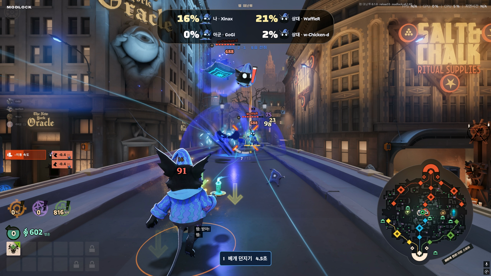

● PLAYABLE
Made By WafflerMade By Waffler
Super Smash Rems
Knockback Arena Brawler • 1v1 / 2v2 / 3v3
상대방에게 피해(%)를 누적시킬수록 피격 시 날아가는 넉백 거리가 증가하며, 상대를 맵 밖(Ring-Out)으로 날려버려 아웃시키는 게임입니다.A knockback-based arena brawler inspired by Super Smash Bros. Instead of losing HP, players accumulate Damage Percentage (%)—the higher your %, the farther you fly when hit. Launch rivals out of bounds to take their stocks!
RemBo7Spectator mode